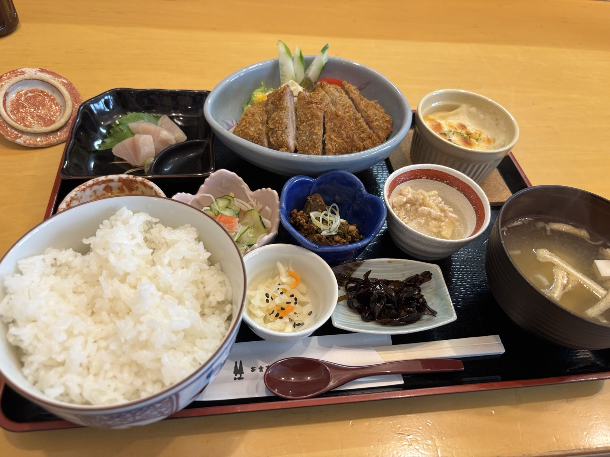
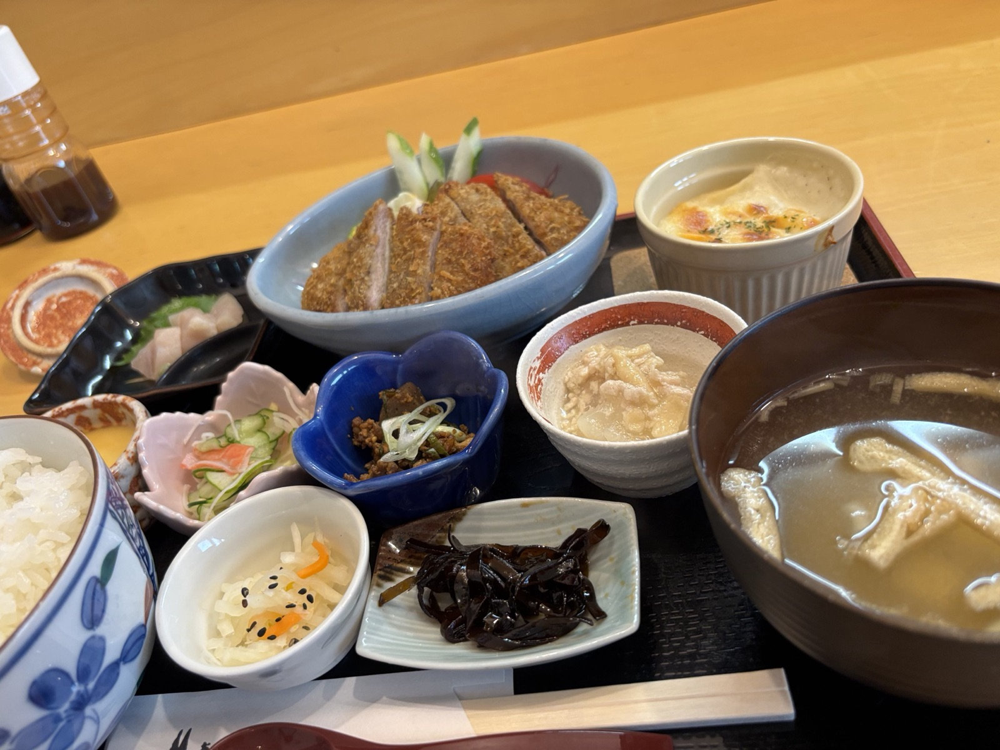
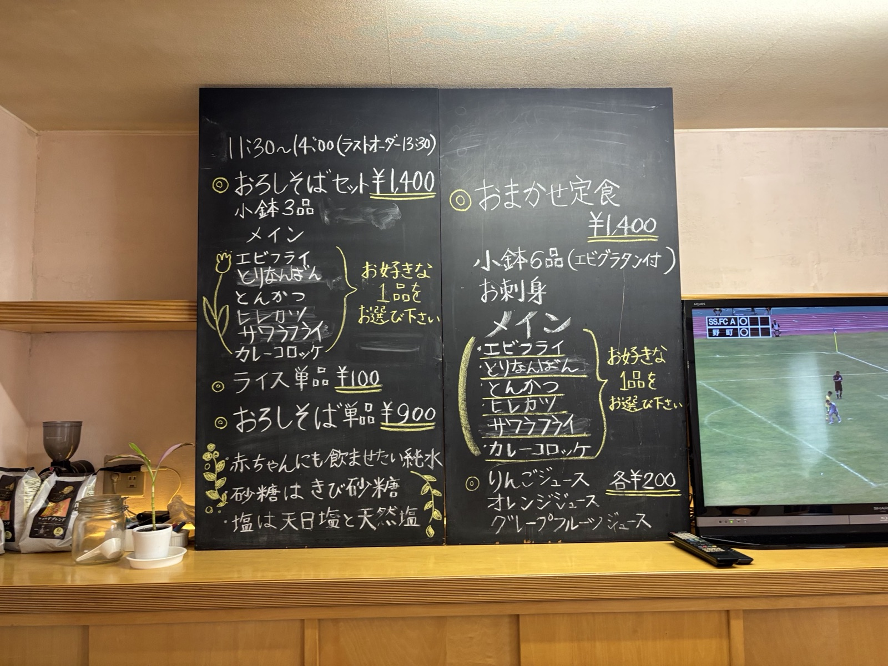
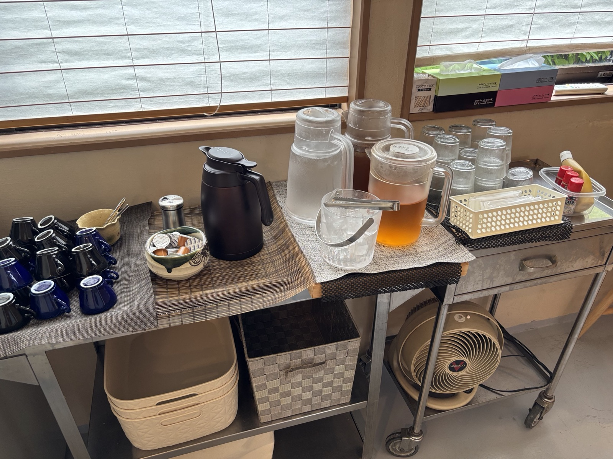

おかえりなさい、と言いたくなる食卓
住宅街の一角、看板がなければ通り過ぎてしまいそうな場所に「食３丁目」はあります。
ここでいただけるのは、飾らない家庭の定食。小鉢がずらりと並ぶお膳に、揚げたてのメインとお刺身、炊きたてのご飯。品数の多さに反して、一つひとつはどこか懐かしく、身体にすっと馴染む味わいです。
使う調味料や飲み水にも、日々の食卓だからこそのこだわりを。派手さはなくとも、通うほどに落ち着く「隠れ家の定食屋」。それが食３丁目です。
💧
純水
赤ちゃんにも飲ませたい、そんな水を使用
🍯
きび砂糖
精製されすぎていない、やさしい甘み
🧂
天日塩・天然塩
素材の味を引き立てる塩選び
お品書き
ランチタイム限定、日替わりで内容が変わる定食2本立て。
店内のようす





店舗情報
| 店名 | お食事処 食３丁目（しょくさんちょうめ） |
|---|---|
| 住所 | 〒921-8044 石川県金沢市米泉町３丁目５１−２ |
| 営業時間 | 11:30〜14:00（ラストオーダー 13:30） |
| 定休日 | 日曜・月曜・火曜 |
| お支払い | 現金のみ |
| 駐車場 | 第2駐車場あり（店舗横、案内板の道順に沿ってお進みください） |
| @3cho_me_ | |
| 食べログ | 食３丁目 - 食べログ |